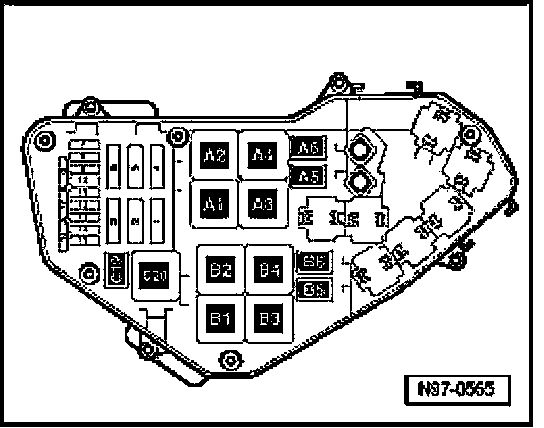
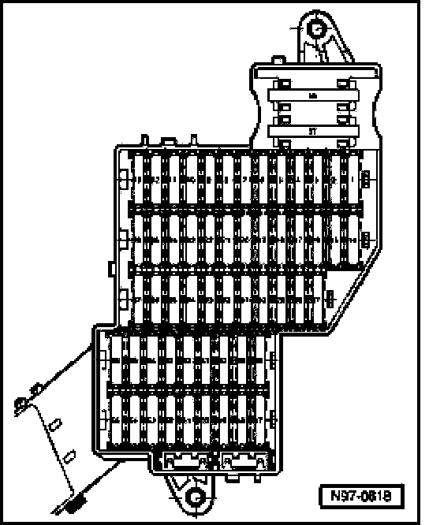
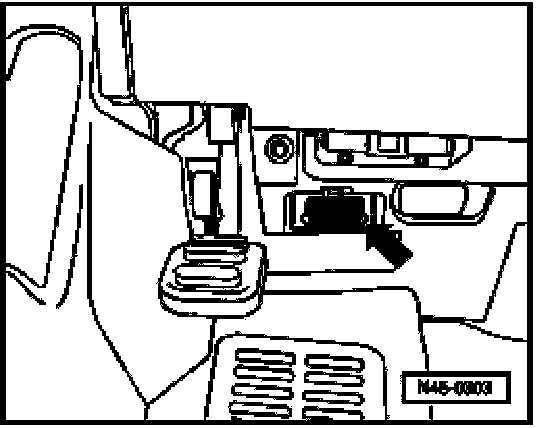

Diagnostic Tester, Connecting
Diagnostic Tester, Connecting
Recommended special tools and equipment e.g.:
- VAS5052 Vehicle Diagnostic and Service Information System with
- VAS 5052/3 diagnostic cable
Requirements

- Fuses in E-box (plenum chamber, left) must be OK.

- Respective fuses in fuse box (instrument panel, left) must be OK.
- Battery voltage must be at least 11.5 volts.
- All electrical consumers such as, lights and rear window defroster must be switched off.
- Parking brake must be engaged or else daylight driving lights will be switched on.
- For vehicles with automatic transmission, selector lever must be in -P-.
- If vehicle is equipped with an A/C system, it must be switched off.
- Ground (GND) connections between engine, transmission, and chassis must be OK.
- Ignition switched off.
Procedure
Connect diagnostic tester (VAS 5052) using (VAS 5052/3) diagnostic cable as follows:

- Connect diagnostic cable connector to Data Link Connector (DLC) (arrow).
- Depending on the desired diagnostic mode, it is necessary to:switch on ignition or start engine, selectable diagnostic modes under address word 33.
NOTE:
- Respective operation of the diagnostic tester:
Operating instructions of the diagnostic tester
- If no display appears on diagnostic tester, check voltage supply at Data Link Connector (DLC).